Examples#
This gallery walks through physicskit.fields: electrodynamics on a Yee
grid, soliton-bearing nonlinear wave equations, and Gross-Pitaevskii
Bose-Einstein condensates – each script reproducing the signature
observable of a specific breakthrough in Breakthroughs in Classical and Quantum Field Theory.
Fluid dynamics has since moved to its own package and gallery; see
physicskit.fluids and Breakthroughs in Fluid Dynamics.
See also the narrative tutorials:
Each script in this gallery is self-contained and can be run directly with
python examples/fields/<section>/<script>.py. Every script also
carries an RST module docstring as its title/description and uses # %%
markers to split narrative text from code, which is exactly what
Sphinx-Gallery renders into the pages below – the script is the source
of truth for what you see, not a copy of it.
Sections#
solitons – the Korteweg-de Vries, nonlinear Schrodinger, and Sine-Gordon equations: Russell’s shape-preserving wave of translation, the elastic KdV soliton-soliton collision, Zabusky and Kruskal’s fission of a generic pulse into a soliton train, free-particle wavepacket spreading under the linear Schrodinger equation, a topologically protected Sine-Gordon kink, an exact kink-antikink collision from the inverse scattering transform, and a dispersion-free optical soliton – several of these animated frame by frame.
electrodynamics – Maxwell’s equations on a Yee grid: measuring the vacuum speed of light from a propagating FDTD pulse, a point source radiating outward in 2D, Berenger’s Perfectly Matched Layer absorbing boundary compared against a hard wall, a Hertzian oscillating dipole antenna radiating outward, a wave crossing a dielectric slab, and a standing TM cavity mode.
quantum_fields – the Gross-Pitaevskii equation for a trapped BEC: detecting a single quantum of circulation around an imprinted vortex, a bound vortex-antivortex pair with canceling net winding (the Kosterlitz-Thouless building block), relaxing to the interacting mean-field ground state, the critical rotation frequency for vortex nucleation, a vortex genuinely precessing in real time, self-focusing wave collapse of an attractive condensate, and the Casimir vacuum force between confining “plates.”
gauge_confinement – a simplified 1+1D toy model of quark confinement: a flux tube stretching between two charges, reproducing the linearly growing confinement energy of Wilson’s 1974 lattice gauge theory.
Electrodynamics#
Finite-difference time-domain (FDTD) solutions of Maxwell’s equations on a Yee grid, in 1D and 2D, plus a graded-conductivity absorbing boundary in the spirit of Berenger’s Perfectly Matched Layer. Also includes animated demos of a Hertzian oscillating dipole antenna, a wave crossing a dielectric slab, and a standing TM cavity mode.
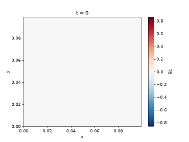
A Hertzian dipole antenna radiating on the Yee grid
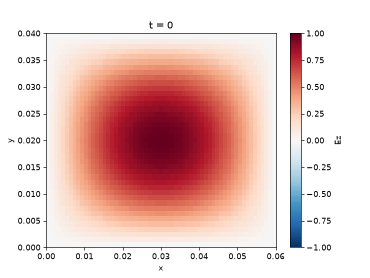
A standing TM cavity mode oscillating in place
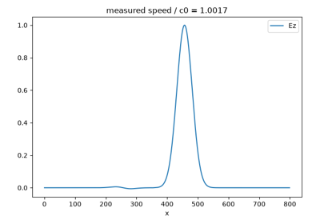
Measuring the speed of light from Maxwell’s equations
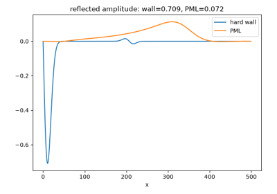
Berenger’s Perfectly Matched Layer vs. a hard wall
Gauge confinement#
A simplified, illustrative 1+1D toy model of quark confinement: a field squeezed into a fixed-cross-section “flux tube” between two opposite charges, reproducing the linearly growing confinement energy that Kenneth Wilson’s 1974 lattice gauge theory predicted – not a lattice-QCD or first-principles gauge-theory calculation.
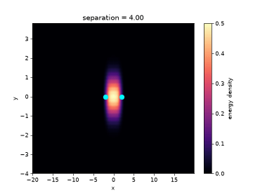
A confining flux tube stretching between two charges
Quantum fields#
Gross-Pitaevskii mean-field theory for a trapped, rotating Bose-Einstein condensate: quantized vortex detection, a bound vortex-antivortex pair with canceling net winding, ground-state relaxation, the critical rotation frequency for vortex nucleation, a vortex genuinely precessing in real time, self-focusing wave collapse, and the Casimir vacuum force.
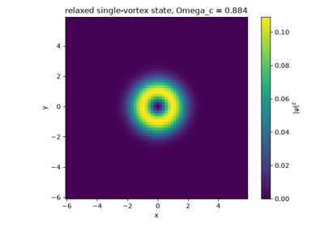
The critical rotation frequency for BEC vortex nucleation
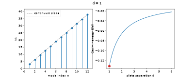
The Casimir energy grows weaker as plates separate
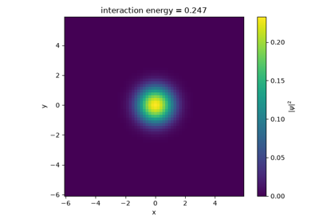
Relaxing to the Gross-Pitaevskii interacting ground state
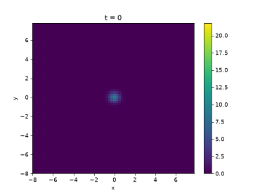
Self-focusing collapse of an attractive condensate
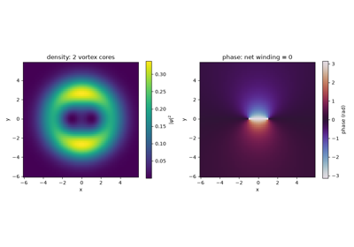
A bound vortex-antivortex pair: opposite windings that cancel at long range
Solitons#
The Korteweg-de Vries, nonlinear Schrodinger, and Sine-Gordon equations: shape-preserving traveling waves, elastic collisions, wavepacket spreading, and topologically protected kinks – several animated frame by frame.
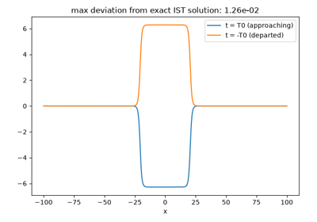
An exact kink-antikink collision from inverse scattering